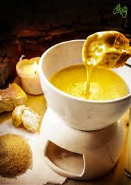

Elsweyr Fondue
Description
Elsweyr Fondue got it's name from the location of its origin or from they use of Moon Sugar in the recipe. It's a cheesy meal best enjoyed with bread.
Ingredients
- 1 Bottle of ale(flat)
- Brown sugar
- 100g Gruyere cheese(grated)
- 100g Emmental cheese(grated)
- 100g Soft Blue cheese(grated)
Steps
- Prep your dipping foods and set aside.
- On medium to low heat, bring the ale to a simmer.
- Lower the heat and begin adding the shredded cheeses a little at a time. Make sure all the cheese is incorporated before adding more.
- Slowly add in brown sugar to taste.
- Transfer your fondue, and enjoy!